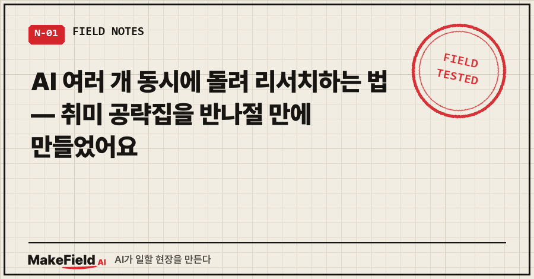
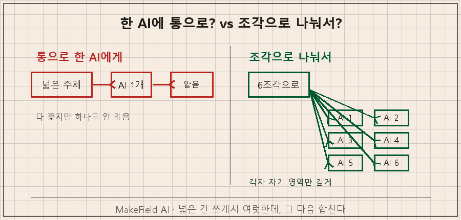
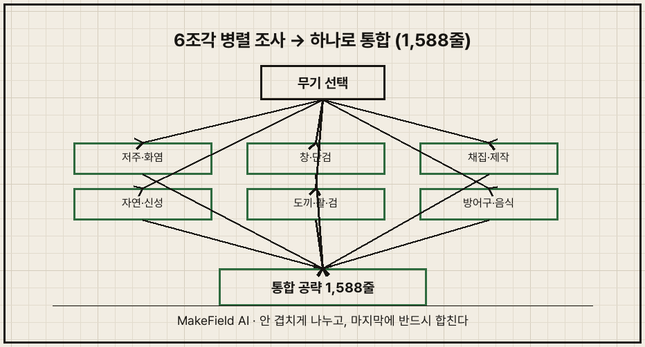

방대한 주제를 혼자 조사하다가 하루가 다 가버린 적, 다들 있으시죠.
저는 그걸 취미에서 겪었어요. 겨우 게임 하나 파는데 창을 스무 개씩 띄워놓고 있더라고요.
먼저 답부터 드릴게요.
넓은 주제는 AI 하나한테 다 시키지 말고, 조각으로 쪼개서 여러 개를 동시에 굴린 다음 하나로 합치면 돼요.
저는 이 방식으로 AI 에이전트 6개를 한 번에 돌려서, 1,588줄짜리 공략 자료를 반나절 만에 뽑았습니다.
소재는 게임이지만, 오늘 남길 건 "AI로 넓은 걸 병렬로 조사해서 통합하는 법"이에요.
1. 취미 하나 정하는데 조사량이 감당이 안 됐어요
발단은 사소했어요.
제가 즐기는 온라인 게임에서 새 무기를 하나 고르려던 거였거든요.
그동안 쓰던 두 무기를 만렙까지 찍었으니, 다음 걸 정해야 했어요.
문제는 후보 무기군이 열 개가 훌쩍 넘는다는 거였어요.
무기마다 스킬 조합이 다르고, 상황별로 좋은 게 갈리고, 장비랑 음식까지 엮여요.
이걸 하나씩 검색해서 비교하려니, 창만 스무 개가 열리고 정작 결론은 안 나더라고요.
저는 현장에서 자동화랑 제어를 만지며 15년을 보낸 엔지니어예요.
요즘은 일하는 방식을 통째로 AI에 붙여 바꾸는 중이라, 이런 조사도 습관처럼 AI한테 넘깁니다.
근데 이번엔 그냥 넘기는 게 안 통했어요.
2. AI 하나한테 다 시켰더니 얕고 뭉개졌어요
처음엔 당연히 AI 하나한테 통으로 물었어요.
"이 무기들 다 비교해서 뭐가 제일 나은지 정리해줘."
결과는 영 별로였어요.
한 AI한테 넓은 주제를 통으로 던지면, 다 훑긴 하는데 하나도 안 깊어요.
무기 열몇 개를 한 번에 다루니, 각각은 두세 줄로 뭉개지더라고요.
"이건 딜이 세고, 저건 방어가 좋고" 수준이요. 그건 저도 알아요.
제가 원한 건 무기 하나하나의 스킬 순서, 상황별 판단, 자주 하는 실수까지였는데,
한 창에 다 밀어넣으니 AI도 어느 하나에 깊이 파고들 여유가 없었던 거죠.

3. 주제를 6조각으로 쪼개서 6개를 동시에 돌렸어요
전환점은 조사를 '나눠서 시키는' 걸로 바꾼 거였어요.
사람 시켜도 똑같잖아요. 한 명한테 다 시키면 얕고, 여섯 명한테 나눠 시키면 각자 깊게 파요.
그래서 무기군을 성격이 비슷한 것끼리 여섯 묶음으로 갈랐어요.
그리고 에이전트 6개를 띄워서, 각자 한 묶음씩만 맡아 깊게 파도록 시켰습니다.
1번은 저주·화염 계열, 2번은 창·단검 계열, 3번은 채집·제작, 이런 식으로 영역을 딱 나눠준 거죠.
핵심은 이거예요. 여섯이 서로 안 겹치게, 각자 자기 영역만 깊게.
겹치면 같은 걸 여섯 번 조사하는 낭비가 되고, 비면 구멍이 나니까요.
지시도 짧고 명확하게 줬어요. 실제로 준 지시는 이런 뼈대였어요.
[에이전트 1] 저주·화염 무기군만 조사
- 무기별 스킬 조합(Q/W/E)
- 상황별 추천 빌드와 스킬 순서
- 흔한 실수와 대안
- 다른 무기군은 건드리지 말 것이 지시를 영역만 바꿔서 여섯 개 만들고, 동시에 출발시켰어요.
제가 커피 한 잔 내리는 사이에, 여섯이 각자 자기 영역을 파고 있었던 거죠.

4. 여섯 결과를 하나로 합치니 1,588줄이 나왔어요
여섯이 다 끝나고 결과를 모았어요.
각자 자기 영역만 깊게 판 덕에, 합쳐보니 결이 훨씬 촘촘했어요.
그걸 하나의 자료로 통합했더니 1,588줄짜리 공략집이 나왔습니다. 파트가 여덟 개였어요.
재밌는 건, 혼자였으면 절대 못 잡았을 것들이 튀어나온 거예요.
통설로 "이게 최고"라고 알려진 것 중에, 특정 상황에선 다른 게 낫다는 게 여럿 나왔거든요.
한 영역만 깊게 판 에이전트가 아니었으면 저 디테일은 뭉개졌을 거예요.
여기서 한 가지 냉정한 결론도 같이 나왔어요.
후보를 다 갖추려면 시간과 자원이 어마어마하게 든다는 계산이 딱 서더라고요.
그래서 "다 하지 말고 두어 개만"으로 방향을 정리했어요.
조사를 깊게 하니까, 안 할 것도 근거를 갖고 정할 수 있었어요. 저한텐 이게 진짜 소득이었고요.
5. 그래서 이 방법을 어디에 쓰냐면요
이건 게임에서만 쓰는 재주가 아니에요.
넓게 조사해야 하는 일이면 뭐든 똑같이 먹혀요.
여행 계획을 짤 때 도시별로 나눠 시키거나,
장비 후보 여러 개를 종류별로 나눠 조사하거나,
공부할 주제를 챕터별로 갈라 정리하거나요.
공통점은 '넓지만 조각으로 쪼갤 수 있는 주제'라는 거예요.
정리하면 순서는 이래요.
- 주제를 안 겹치는 조각으로 나눈다. 사람 여럿한테 배분한다고 생각하면 쉬워요.
- 조각마다 AI를 하나씩 붙여 동시에 시킨다. "네 영역만 깊게, 남의 영역은 건드리지 마"를 지시에 박아둡니다.
- 결과를 모아 하나로 통합한다. 이 마지막 합치기가 핵심이에요. 조각만 있으면 자료가 아니거든요.
저도 처음엔 2번에서 걸렸어요.
영역을 대충 나눴더니 둘이 같은 걸 조사해서 겹치더라고요.
"이 영역만, 나머지는 건드리지 마"를 명확히 박고 나서야 깔끔하게 나뉘었어요.
자주 묻는 질문
Q. AI를 여러 개 동시에 못 띄우면 어떡하나요?
창을 여러 개 여는 도구가 없어도 됩니다. 한 AI한테 조각을 하나씩 순서대로 시키고, 결과를 따로 모아두기만 해도 원리는 같아요. 동시에 돌리면 시간이 줄 뿐이지, 본질은 '쪼개서 시키고 합치기'예요.
Q. 그냥 한 번에 물어보면 안 되나요?
좁은 주제면 한 번이 낫습니다. 이 방식은 '한 AI가 통으로 다루면 얕아지는' 넓은 주제일 때만 값어치가 있어요. 무기 하나만 물을 거면 굳이 여섯으로 안 나눠요.
Q. 합칠 때 내용이 서로 안 맞으면요?
그게 오히려 소득이에요. 영역별로 판 결과가 충돌하면, 통설이 상황 따라 갈린다는 신호거든요. 그 충돌 지점을 표로 정리해두면 그게 제일 값진 정보가 됩니다.
정리하면요
넓은 걸 AI 하나한테 통으로 시키면 얕게 뭉개져요.
조각으로 쪼개서 여러 개를 각자 깊게 굴린 다음, 하나로 합치는 게 답이에요.
저는 그걸 취미 공략집으로 처음 제대로 해봤고, 반나절에 1,588줄이 나왔어요.
- ☐ 지금 조사 중인 주제가 '넓지만 조각낼 수 있는' 것인가
- ☐ 조각끼리 안 겹치게 영역을 딱 갈랐는가
- ☐ 마지막에 하나로 합치는 단계를 빼먹지 않았는가
이렇게 취미까지 AI로 병렬 조사한 기록은 makefield.ai에 하나씩 옮겨두고 있어요.
혹시 요즘 혼자 붙들고 못 끝내는 조사, 하나쯤 있으세요.
그거 여섯 조각으로 나눠서 던져보는 것부터 해보시길요.
태그: #AI병렬리서치 #AI에이전트 #AI리서치자동화 #동시조사 #AI활용법 #정보수집AI #AI에이전트동시실행 #나만의AI #생성형AI #AI공부법 #멀티에이전트 #AI자료조사 #제조업AI #현장엔지니어 #MakeFieldAI